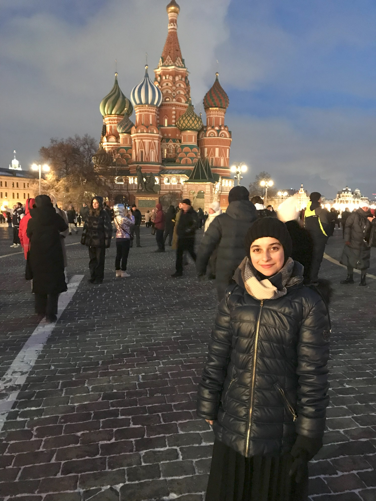
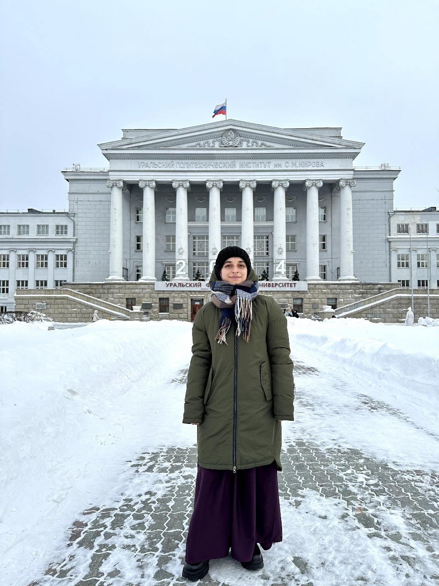
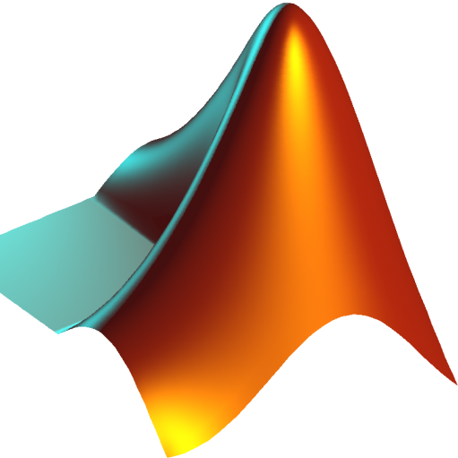
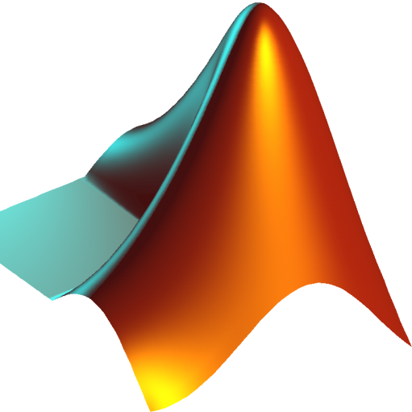
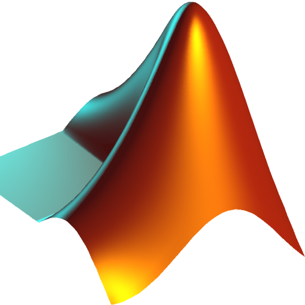

Hello I'm Meriem.
I'm a Hydraulics Engineer & Data scientist
Based in Yekaterinburg, I am a Data Scientist and Hydraulic
Engineer with a diverse technical background. I specialize in data analysis
and modeling, with experience in various fields, from environmental systems to predictive analytics.
My expertise spans across developing machine learning models and optimizing hydraulic systems.
I am passionate about leveraging data to solve complex problems and thrive in dynamic,
interdisciplinary environments. I apply a holistic approach to my work, focusing on collaboration,
innovation, and continuous improvement to create impactful solutions that drive progress


Who am i ?
I am a Hydraulic Engineer and Data Scientist with a passion
for discovering how technology, especially AI, can be applied to solve complex
problems in hydrology and beyond.
Naturally curious and quick to adapt, thrive in dynamic environments and enjoy learning new things. I bring a blend of technical expertise and an open, collaborative mindset to every project I work on. My profile is a combination of hands-on engineering and data-driven problem-solving. I love working at the intersection of hydrology and AI, exploring innovative ways to apply machine learning to real-world challenges. I’m also committed to teamwork and enjoy leading by example, fostering an atmosphere of growth and continuous learning.
Known for my positive attitude and strong sense of responsibility, I approach every task with energy and enthusiasm. On the technical side, I’ve worked across various disciplines, always aiming to expand my skill set while focusing on creating efficient and effective solutions. Whether optimizing hydraulic systems or developing data-driven models, I strive to connect my knowledge of engineering with cutting-edge AI techniques, bringing holistic solutions to the table.
Naturally curious and quick to adapt, thrive in dynamic environments and enjoy learning new things. I bring a blend of technical expertise and an open, collaborative mindset to every project I work on. My profile is a combination of hands-on engineering and data-driven problem-solving. I love working at the intersection of hydrology and AI, exploring innovative ways to apply machine learning to real-world challenges. I’m also committed to teamwork and enjoy leading by example, fostering an atmosphere of growth and continuous learning.
Known for my positive attitude and strong sense of responsibility, I approach every task with energy and enthusiasm. On the technical side, I’ve worked across various disciplines, always aiming to expand my skill set while focusing on creating efficient and effective solutions. Whether optimizing hydraulic systems or developing data-driven models, I strive to connect my knowledge of engineering with cutting-edge AI techniques, bringing holistic solutions to the table.
Education
2025
Master Preparation in Practical Artificial Intelligence
Ural Federal University of Yekaterinburg Russia
Preparation for a Master degree in AI at URFU university.
2024
Russian Language Course
Ural Federal University of Yekaterinburg Russia
Study of the Russian language until A2 level.
2023
Publication Of scientific Paper
Journal of Hydrology
After a reaserch about applying maching learning models to predict flood quantiles in ungauged watershed.
2022
Master: Hydraulic structures
University of Sciences and Technology Houari Boumediene Bab Ezzouar
Master Degree in Hydraulic Structures, Grade Excellent, after the completion of a thesis entitled Estimation of flood flows in ungauged catchment areas by the use of artificial intelligence.
Master Preparation in Practical Artificial Intelligence
Ural Federal University of Yekaterinburg Russia
Preparation for a Master degree in AI at URFU university.
2024
Russian Language Course
Ural Federal University of Yekaterinburg Russia
Study of the Russian language until A2 level.
2023
Publication Of scientific Paper
Journal of Hydrology
After a reaserch about applying maching learning models to predict flood quantiles in ungauged watershed.
2022
Master: Hydraulic structures
University of Sciences and Technology Houari Boumediene Bab Ezzouar
Master Degree in Hydraulic Structures, Grade Excellent, after the completion of a thesis entitled Estimation of flood flows in ungauged catchment areas by the use of artificial intelligence.
2020
Bachelor: Hydraulics
University of Sciences and Technology Houari Boumediene Bab Ezzouar
Bachelor's degree in Hydraulics after the development of an end-of-cycle project on the dimensioning of sewerage networks.
2017
Baccalaureate: Experimental sciences
Omar el Moukhtar High school Bordj El Kiffan
Scientific baccalaureate diploma with a fairly good grade.
Bachelor: Hydraulics
University of Sciences and Technology Houari Boumediene Bab Ezzouar
Bachelor's degree in Hydraulics after the development of an end-of-cycle project on the dimensioning of sewerage networks.
2017
Baccalaureate: Experimental sciences
Omar el Moukhtar High school Bordj El Kiffan
Scientific baccalaureate diploma with a fairly good grade.
Experience
Mai 2022 - 2024:
Data scientist – freelance, Remote working
Solving problems with predictive models or proposals for improvement and optimization, based on data analysis. Collection, cleaning and analysis of data in order to be able to use them and produce statistics studies.
Data scientist – freelance, Remote working
Solving problems with predictive models or proposals for improvement and optimization, based on data analysis. Collection, cleaning and analysis of data in order to be able to use them and produce statistics studies.
October. 2020 – November. 2021
Vice-President– Hydro Club, Algiers, USTHB
Coordinating the various activities of the Hydro Club university club by ensuring good communication between the administrative staff and the members, facilitating periodic club meetings, providing organizational leadership to set strategies and policies within the club at long term.
Vice-President– Hydro Club, Algiers, USTHB
Coordinating the various activities of the Hydro Club university club by ensuring good communication between the administrative staff and the members, facilitating periodic club meetings, providing organizational leadership to set strategies and policies within the club at long term.
March. 2021 – April. 2021
Trainee – LAKA Engineering Services, Alger Plage
Completion of a practical internship in an engineering services office in the field of cartography and Geographic Information Systems.
Trainee – LAKA Engineering Services, Alger Plage
Completion of a practical internship in an engineering services office in the field of cartography and Geographic Information Systems.
October. 2020 – Novembre. 2020
Trainee – SEEAL (Algiers Water and Sanitation Company), Reghaia
Completion of a practical internship within the wastewater treatment plant in order to train me in the operation of the installations of a wastewater treatment station, and the sanitation services.
Trainee – SEEAL (Algiers Water and Sanitation Company), Reghaia
Completion of a practical internship within the wastewater treatment plant in order to train me in the operation of the installations of a wastewater treatment station, and the sanitation services.
December. 2019 – July. 2020
English teacher –Plume d’or School, Algiers
Making courses aimed at facilitating the learning of the English language for students by having them recite regularly to ensure their integration and oral comprehension
English teacher –Plume d’or School, Algiers
Making courses aimed at facilitating the learning of the English language for students by having them recite regularly to ensure their integration and oral comprehension
Experienced professional with over 4 years of expertise in data science, team leadership,
and engineering services. Skilled in using predictive models and data analysis to solve complex
problems. Led organizational activities as vice-president of a university club,
with hands-on experience in engineering internships and environmental services.
Focused on delivering optimized, data-driven solutions.

 



Skills
Software skills
languages
Python, Keras, JupyterNootbook,
Google Colab MATLAB.
Epanet, SWMM, ArcGis,
Autocad, Covadis.
Office Pack (Excel, Word, Powerpoint)
Graphic (Photoshop, Adobe XD). SOFTWARE
Google Colab MATLAB.
Epanet, SWMM, ArcGis,
Autocad, Covadis.
Office Pack (Excel, Word, Powerpoint)
Graphic (Photoshop, Adobe XD). SOFTWARE
Arabic: First language
French : C2 Advanced
English : C1 Advanced
Russian: A2 Beginner
French : C2 Advanced
English : C1 Advanced
Russian: A2 Beginner

Contact
Github
Github Profile
Github Profile
WhatsApp Number
+7 916 613 28 41
+7 916 613 28 41
Location
Palisadnaya Street Yekaterinburg - Russia
Palisadnaya Street Yekaterinburg - Russia